The rate for sending a cover to another city for the first 2 Miskal was 6ch for the whole era except a short period in 1921. Most covers fall into this weight class and have 6ch rate (more on rates here).
The Ahmad Shah portrait issue of 1911 was in use from 1911 until 1920. As such, the combination of the rate and the stamp used make the cover demonstrated below a very typical cover of this era.
On the front of the cover, you can usually find the name of the destination city and the name of the receiver. Usually, the date is also included in Hegira calendar as it was the most popular among common people due to its religious significance.
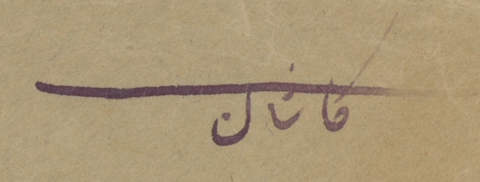Destination city name: Kachan (کاشان)
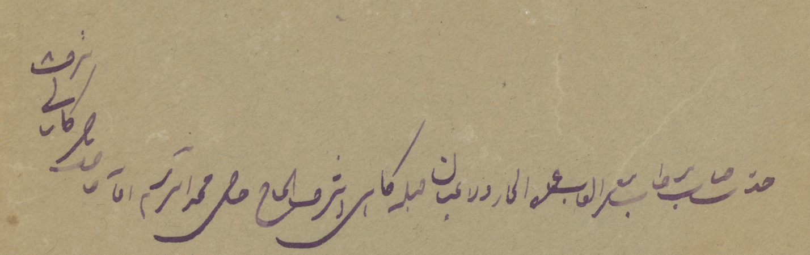Receiver's name
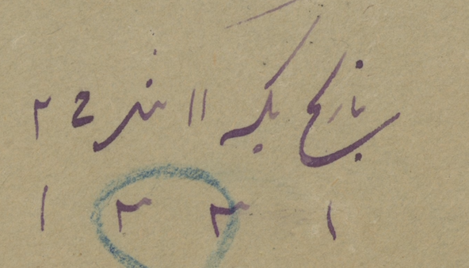Manuscript date: 11th of Jamadi-alsani 1331 (18th of May 1913)
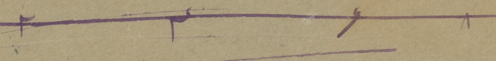To ensure that the letter would get to the destination, the sender usually wrote the secret code for the gaurdian angle of the parcels. The secret codes was "2468" or "8642".
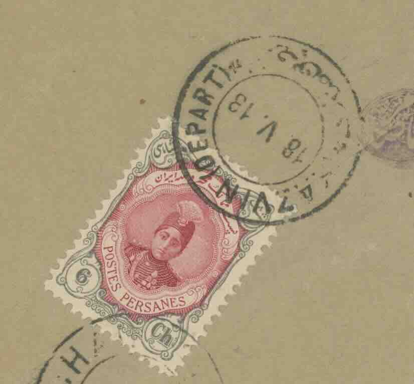The stamp was usually added to the back and was canceled with the sender's post office postmark. This letter was sent from Kazvin (قزوین) and the Kazvin postmark has 18/5/1913 date on it.
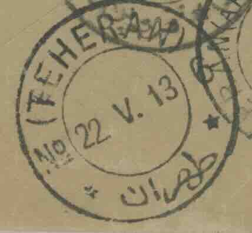Sometimes, you can find the postmark of other cities that the letter was routed through. In this case, there is a Tehran postmark with date 22/5/13.
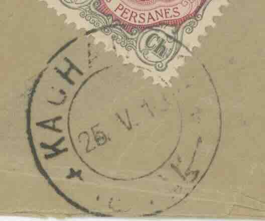Most often, there is a destination post office postmark as well. This letter was sent to Kachan and based on the Kachan's postmark was received on 25/5/1913.
A Postbox (صندوق) marking indicates that the letter was dropped in a postbox. This marking is usually a small circle with the farsi letter "ص" in the middle.
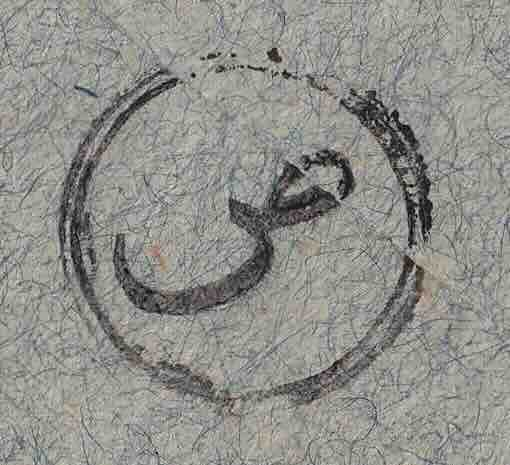A postage due marking is usually a small circle with English letter "T" in it. It indicate that the postage fee was not fully paid. Usually, the amount owed was paid by the receiver. In that era, some major merchants had accounts with the post office and in such circumstances, the post office would automatically withdraw what was owed from that account.
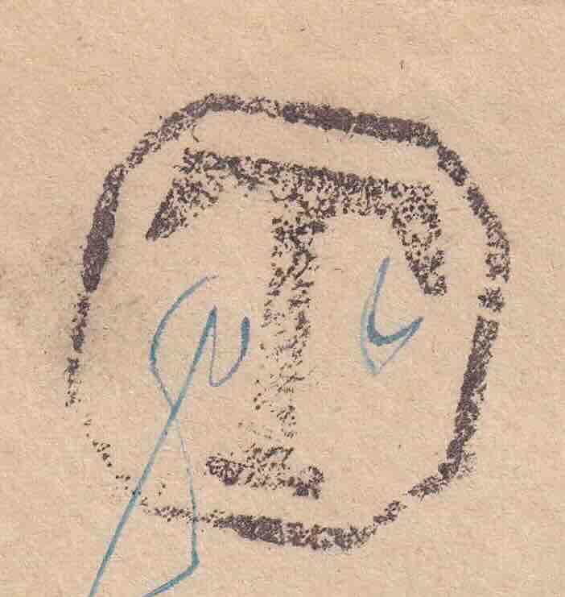At times, the post office cancelled stamps for what was owed and tied that to the envelope.
The Ahmad Shah era was very chaotic and more often than not, post offices would run out of stamps. Despite no stamps being available the post offices continue their service by using a marking for showing the postage was paid.
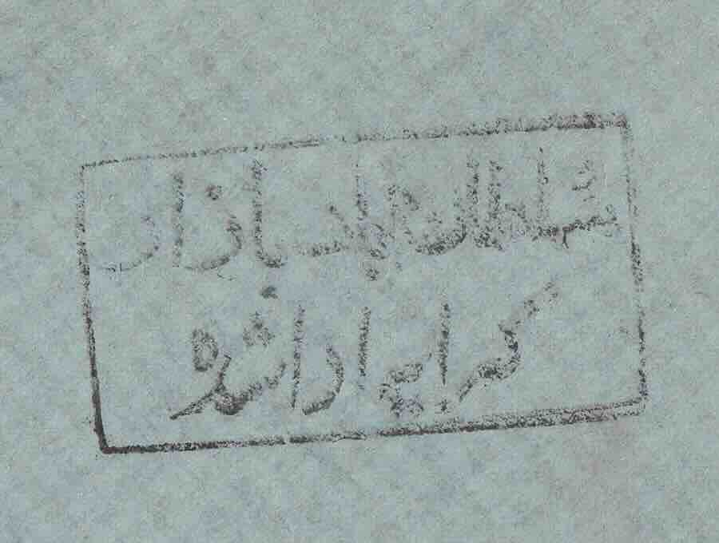Sometimes, post offices would combine the postage for several letters together and cancel the postage with a larger denomination in a separate sheet.
The registered coves needed to get tracked along the way to the destination. In order to uniquely identify a registered letter, the sender post office assign a unique id to the letter. To communicate this number with foreign post offices, it was common to use a registration marking.
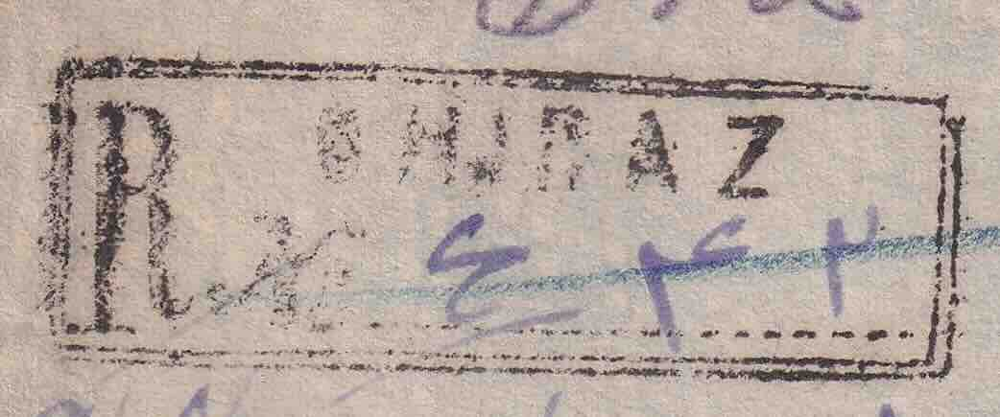According to Goodarzi in [Impact of Political events on the Postal History of Persia in the Late 19th and Early 20th Centries, 2023], the constitutional goverment imposed these censorship to monitor the communication of various armed groups. These control markings were used in various shapre and form in multiple cities.
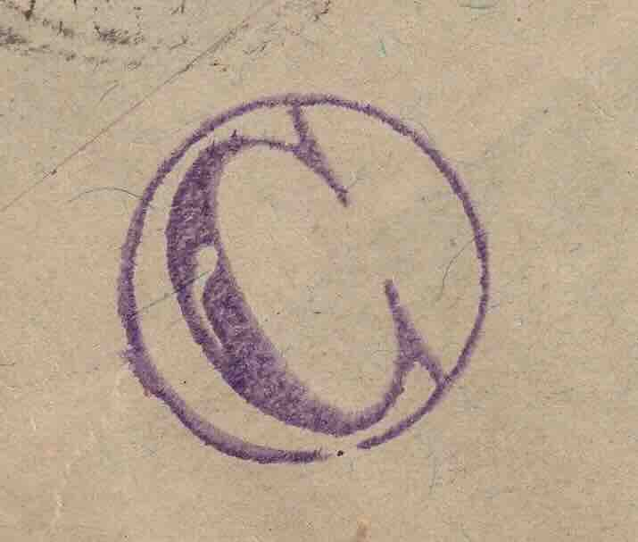Multiple military forces and authorities enforced monitoring of postal communications.
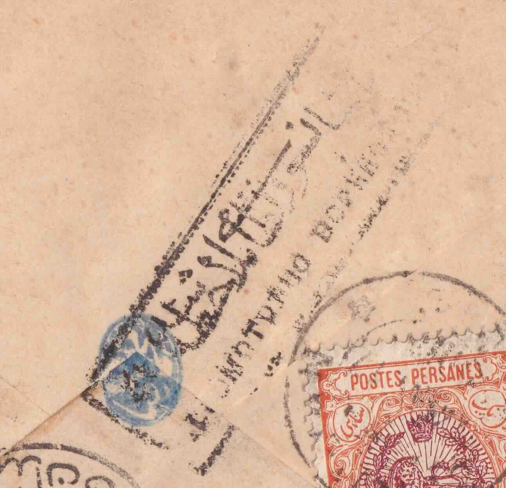